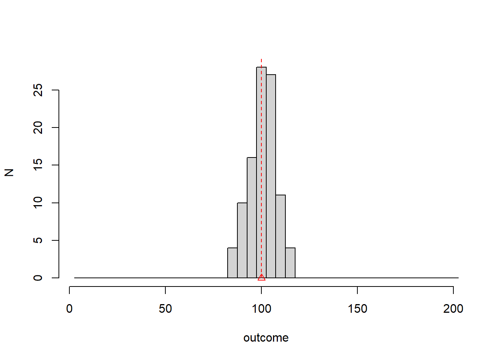

Chapter 2 Data description
2.2 Statistics
Solve problems in a systematic way (science, engineering and technology)
Modern humans use a general method historically developed for thousands of years! … and still under development.
It has three main components: observation, logic, and generation of new knowledge

2.4 Outcome
Observation or Realization
- an observation is the acquisition of a number or a characteristic from an experiment
… 1 0 0 1 0 1 0 1 1 … (the number in bold is an observation in a repetition of the experiment)
Outcome
- An outcome is a possible observation that is the result of an experiment.
1 is an outcome, 0 is the other outcome
2.5 Types of outcome
- Categorical: If the result of an experiment can only take discrete values (number of car pieces produced per hour, number of leukocytes in blood)
- Continuous: If the result of an experiment can only take continuous values (battery state of charge, engine temperature).
2.6 Random experiments
Definition:
A random experiment is an experiment that gives different outcomes when repeated in the same manner.
Examples:
- on the same object (person): temperature, sugar levels.
- on different objects but the same measurement: the weight of an animal.
- on events: a number of emails received in an hour.
2.7 Absolute frequencies
When we repeat a random experiment, we record a list of outcomes.
We summarize the categorical observations by counting how many times we saw a particular outcome.
Absolute frequency:
\[n_i\]
is the number of times we observed the outcome \(i\)
2.8 Example
Random experiment: Extract a leukocyte from one donor and write down its type. Repeat experiment \(N=119\) times.
(T cell, Tcell, Neutrophil, ..., B cell)## outcome ni
## 1 T Cell 34
## 2 B cell 50
## 3 basophil 20
## 4 Monocyte 5
## 5 Neutrophil 10- For instance: \(n_1=34\) is total number of T cells
- \(N=\sum_i n_i=119\)
2.9 Relative frequencies
We can also summarize the observations by computing the proportion of how many times we saw a particular outcome.
\[f_i=n_i/N\] where \(N\) is the total number of observations
In our example there are recorded \(n_1=34\) T cells, so we ask for the proportion of T cells from the total of \(119\).
2.10 Example
## outcome ni fi
## 1 T Cell 34 0.28571429
## 2 B cell 50 0.42016807
## 3 basophil 20 0.16806723
## 4 Monocyte 5 0.04201681
## 5 Neutrophil 10 0.08403361We have
\(\sum_{i=1..M} n_i = N\)
\(\sum_{i=1..M} f_i = 1\)
where \(M\) is the number of outcomes.

2.12 Pie chart
We can visualize the relative frequencies with a pie chart
- Where the area of the circle represents 100% of observations (proportion = 1) and the sections the relative frequencies of all the outcomes.

2.13 Categorical and ordered variables
Cell types are not meaningfully ordered concerning the outcomes. However, sometimes categorical variables can be ordered.
Misophonia study:
123 patients were examined for misophonia: anxiety/anger produced by certain sounds
They were categorized into 4 different groups according to severity.
2.14 Example
The results of the study are:
## [1] 4 2 0 3 0 0 2 3 0 3 0 2 2 0 2 0 0 3 3 0 3 3 2 0 0 0 4 2 2 0 2 0 0 0 3 0 2
## [38] 3 2 2 0 2 3 0 0 2 2 3 3 0 0 4 3 3 2 0 2 0 0 0 2 2 0 0 2 3 0 1 3 2 4 3 2 3
## [75] 0 2 3 2 4 1 2 0 2 0 2 0 2 2 4 3 0 3 0 0 0 2 2 1 3 0 0 3 2 1 3 0 4 4 2 3 3
## [112] 3 0 3 2 1 2 3 3 4 2 3 2And its frequency table
## outcome ni fi
## 1 0 41 0.33333333
## 2 1 5 0.04065041
## 3 2 37 0.30081301
## 4 3 31 0.25203252
## 5 4 9 0.073170732.15 Absolute and relative cumulative frequencies
Misophonia severity is categorical and ordered.
When outcomes can be ordered then it is useful to ask how many observations were obtained up to a given outcome we call this number the absolute cumulative frequency up to the outcome \(i\): \[N_i=\sum_{k=1..i} n_k\] It is also useful to compute the proportion of the observations that was obtained up to a given outcome
\[F_i=\sum_{k=1..i} f_k\]
2.16 Frequency table
## outcome ni fi Ni Fi
## 0 0 41 0.33333333 41 0.3333333
## 1 1 5 0.04065041 46 0.3739837
## 2 2 37 0.30081301 83 0.6747967
## 3 3 31 0.25203252 114 0.9268293
## 4 4 9 0.07317073 123 1.000000067% of patients had misophonia up to severity 2
37% of patients have severity less or equal than 1

2.18 Continuous variables
The result of a random experiment can also give continuous outcomes.
In the misophonia study, the researchers asked whether the convexity of the jaw would affect the misophonia severity (the scientific hypothesis is that the convexity angle of the jaw can influence the ear and its sensitivity). These are the results for the convexity of the jaw (degrees)
## [1] 7.97 18.23 12.27 7.81 9.81 13.50 19.30 7.70 12.30 7.90 12.60 19.00
## [13] 7.27 14.00 5.40 8.00 11.20 7.75 7.94 16.69 7.62 7.02 7.00 19.20
## [25] 7.96 14.70 7.24 7.80 7.90 4.70 4.40 14.00 14.40 16.00 1.40 9.76
## [37] 7.90 7.90 7.40 6.30 7.76 7.30 7.00 11.23 16.00 7.90 7.29 6.91
## [49] 7.10 13.40 11.60 -1.00 6.00 7.82 4.80 11.00 9.00 11.50 16.00 15.00
## [61] 1.40 16.80 7.70 16.14 7.12 -1.00 17.00 9.26 18.70 3.40 21.30 7.50
## [73] 6.03 7.50 19.00 19.01 8.10 7.80 6.10 15.26 7.95 18.00 4.60 15.00
## [85] 7.50 8.00 16.80 8.54 7.00 18.30 7.80 16.00 14.00 12.30 11.40 8.50
## [97] 7.00 7.96 17.60 10.00 3.50 6.70 17.00 20.26 6.64 1.80 7.02 2.46
## [109] 19.00 17.86 6.10 6.64 12.00 6.60 8.70 14.05 7.20 19.70 7.70 6.02
## [121] 2.50 19.00 6.802.19 Bins
Continuous outcomes cannot be counted!
We transform them into ordered categorical variables
- We cover the range of the observations into regular intervals of the same size (bins)
## [1] "[-1.02,3.46]" "(3.46,7.92]" "(7.92,12.4]" "(12.4,16.8]" "(16.8,21.3]"2.20 Create a categorical variable from a continuous one
- We map each observation to its interval: creating an ordered categorical variable; in this case with 5 possible outcomes
## [1] "(7.92,12.4]" "(16.8,21.3]" "(7.92,12.4]" "(3.46,7.92]" "(7.92,12.4]"
## [6] "(12.4,16.8]" "(16.8,21.3]" "(3.46,7.92]" "(7.92,12.4]" "(3.46,7.92]"
## [11] "(12.4,16.8]" "(16.8,21.3]" "(3.46,7.92]" "(12.4,16.8]" "(3.46,7.92]"
## [16] "(7.92,12.4]" "(7.92,12.4]" "(3.46,7.92]" "(7.92,12.4]" "(12.4,16.8]"
## [21] "(3.46,7.92]" "(3.46,7.92]" "(3.46,7.92]" "(16.8,21.3]" "(7.92,12.4]"
## [26] "(12.4,16.8]" "(3.46,7.92]" "(3.46,7.92]" "(3.46,7.92]" "(3.46,7.92]"
## [31] "(3.46,7.92]" "(12.4,16.8]" "(12.4,16.8]" "(12.4,16.8]" "[-1.02,3.46]"
## [36] "(7.92,12.4]" "(3.46,7.92]" "(3.46,7.92]" "(3.46,7.92]" "(3.46,7.92]"
## [41] "(3.46,7.92]" "(3.46,7.92]" "(3.46,7.92]" "(7.92,12.4]" "(12.4,16.8]"
## [46] "(3.46,7.92]" "(3.46,7.92]" "(3.46,7.92]" "(3.46,7.92]" "(12.4,16.8]"
## [51] "(7.92,12.4]" "[-1.02,3.46]" "(3.46,7.92]" "(3.46,7.92]" "(3.46,7.92]"
## [56] "(7.92,12.4]" "(7.92,12.4]" "(7.92,12.4]" "(12.4,16.8]" "(12.4,16.8]"
## [61] "[-1.02,3.46]" "(12.4,16.8]" "(3.46,7.92]" "(12.4,16.8]" "(3.46,7.92]"
## [66] "[-1.02,3.46]" "(16.8,21.3]" "(7.92,12.4]" "(16.8,21.3]" "[-1.02,3.46]"
## [71] "(16.8,21.3]" "(3.46,7.92]" "(3.46,7.92]" "(3.46,7.92]" "(16.8,21.3]"
## [76] "(16.8,21.3]" "(7.92,12.4]" "(3.46,7.92]" "(3.46,7.92]" "(12.4,16.8]"
## [81] "(7.92,12.4]" "(16.8,21.3]" "(3.46,7.92]" "(12.4,16.8]" "(3.46,7.92]"
## [86] "(7.92,12.4]" "(12.4,16.8]" "(7.92,12.4]" "(3.46,7.92]" "(16.8,21.3]"
## [91] "(3.46,7.92]" "(12.4,16.8]" "(12.4,16.8]" "(7.92,12.4]" "(7.92,12.4]"
## [96] "(7.92,12.4]" "(3.46,7.92]" "(7.92,12.4]" "(16.8,21.3]" "(7.92,12.4]"
## [101] "(3.46,7.92]" "(3.46,7.92]" "(16.8,21.3]" "(16.8,21.3]" "(3.46,7.92]"
## [106] "[-1.02,3.46]" "(3.46,7.92]" "[-1.02,3.46]" "(16.8,21.3]" "(16.8,21.3]"
## [111] "(3.46,7.92]" "(3.46,7.92]" "(7.92,12.4]" "(3.46,7.92]" "(7.92,12.4]"
## [116] "(12.4,16.8]" "(3.46,7.92]" "(16.8,21.3]" "(3.46,7.92]" "(3.46,7.92]"
## [121] "[-1.02,3.46]" "(16.8,21.3]" "(3.46,7.92]"2.21 Frequency table for a continuous variable
## outcome ni fi Ni Fi
## 1 [-1.02,3.46] 8 0.06504065 8 0.06504065
## 2 (3.46,7.92] 51 0.41463415 59 0.47967480
## 3 (7.92,12.4] 26 0.21138211 85 0.69105691
## 4 (12.4,16.8] 20 0.16260163 105 0.85365854
## 5 (16.8,21.3] 18 0.14634146 123 1.000000002.22 Histogram
The histogram is the plot of \(n_i\) or \(f_i\) Vs the outcomes (bins). The histogram depends on the size of the bins

2.23 Histogram
The histogram is the plot of \(n_i\) or \(f_i\) Vs the outcomes (bins). The histogram depends on the size of the bins

2.24 Cumulative frequency plot: Continous variables
We can also plot the cumulative frequency Vs the outcomes

2.25 Summary statistics
The summary statistics are numbers computed from the data that tell us important features of numerical variables (categorical or continuous).
Limiting values:
- minimum: the minimum outcome observed
- maximum: the maximum outcome observed
Central value for the outcomes
- The average is defined as
\[\bar{x}=\frac{1}{N} \sum_{j=1..N} x_j\]
where \(x_j\) is the observation \(j\) (convexity) from a total of \(N\).
2.26 Average
The average convexity can be computed directly from the observations
\(\bar{x}= \frac{1}{N}\sum_j x_j\)
\(= \frac{1}{N}(7.97 + 18.23 + 12.27... + 6.80) = 10.19894\)
2.27 Average (categorical ordered)
For categorical ordered variables we can use the frequency table to compute the average
## outcome ni fi
## 1 0 41 0.33333333
## 2 1 5 0.04065041
## 3 2 37 0.30081301
## 4 3 31 0.25203252
## 5 4 9 0.07317073The average severity of misophonia in the study can also be computed from the relative frequencies of the outcomes
\(\bar{x}=\frac{1}{N}\sum_{i=1...N} x_j=\frac{1}{N}\sum_{i=1...M} x_i*n_{i}=\sum_{i=1...M} x_i*f_{i}\)
\(=0*f_{0}+1*f_{1}+2*f_{2}+3*f_{3}+4*f_{4}=1.691057\)
(note the change from \(N\) to \(M\) in the second summation)
2.28 Average (categorical ordered)
In terms of the outcomes of categorical ordered variables, the average can be written as
\[\bar{x}= \sum_{i = 1...M} x_i f_i\]
from a total of \(M\) possible outcomes (number of severity levels).
\(\bar{x}\) is the central value or center of gravity of the outcomes. As if each outcome had a mass density given by \(f_i\).
2.29 Average
The average is not the result of one observation (random experiment).
It is the result of a series of observations (sample).
It describes the number where the observed values balance.
That is why we hear, for instance, that a patient with an infection can infect an average of 2.5 people.

2.31 Median
Another measure of centrality is the median. The median \(q_{0.5}\) is the value \(x_p\)
\[median(x)=q_{0.5}=x_p\]
below which we find half of the observations
\[\sum_{x\leq x_p} 1 = \frac{N}{2}\]
or in terms of the frequencies, is the value \(x_p\) that makes the cumulative frequency \(F_p\) equal to \(0.5\)
\[q_{0.5}=\sum_{x\leq x_p} f_x =F_p=0.5\]
2.32 Median Vs Average
- Average: Center of mass (compensates distant values)
- Median: Half of the mass

2.33 Dispersion
An important measure of the outcomes is their dispersion. Many experiments can share their mean but differ on how dispersed the values are.

2.35 Sample variance
Dispersion about the mean is measured with the
- The sample variance:
\[s^2=\frac{1}{N-1} \sum_{j=1..N} (x_j-\bar{x})^2\]
It measures the average square distance of the observations to the average. The reason for \(N-1\) will be explained when we talk about inference.
2.36 Sample variance
- In terms of the frequencies of categorical and ordered variables
\[s^2=\frac{N}{N-1} \sum_{x} (x-\bar{x})^2 f_x\]
\(s^2\) can be thought of as the moment of inertia of the observations.
2.37 Standard deviation
The squared root of the sample variance is called the standard deviation \(s\).
The standard deviation of the convexity angle is
\(s= [\frac{1}{123-1}((7.97-10.19894)^2+ (18.23-10.19894)^2\)
\(+ (12.27-10.19894)^2 + ...)]^{1/2} = 5.086707\)
The jaw convexity deviates from its mean by \(5.086707\).
2.38 IQR
Dispersion of data can also be measured with respect to the median by the interquartile range
We define the first quartile as the value \(x_p\) that makes the cumulative frequency \(F_p\) equal to \(0.25\)
\[q_{0.25}=\sum_{x\leq x_p} f_x =F_p=0.25\]
- We also define the third quartile as the value \(x_p\) that makes the cumulative frequency \(F_p\) equal to \(0.75\)
\[q_{0.75}=\sum_{x\leq x_p} f_x =F_p=0.75\]